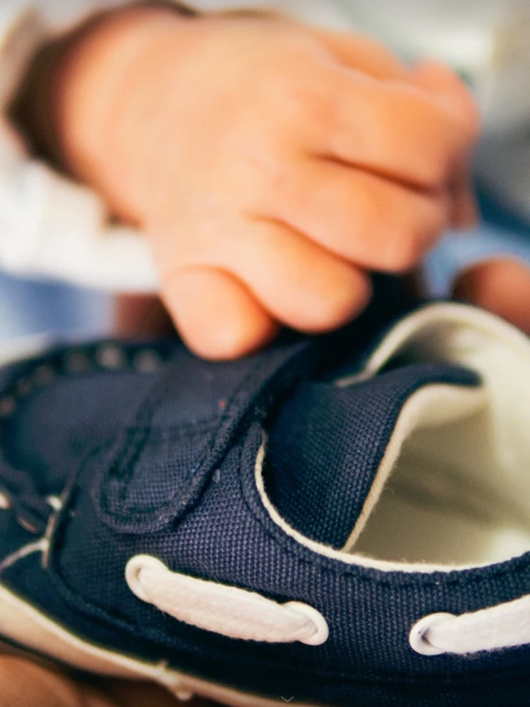

[Insert new text here.]

Here are all of our experienced staff.
I graduated from Monash 1987 and came to Bendigo in 1990. Together with my wife Charmian, we enjoy being all round family doctors.
MBBS - University of Melbourne (1983)
Graduate 1975 University of Melbourne. Practising as a GP since 1978.
Dr Alfy Ordukaya commenced practice at Breen Street Medical in August this year. Dr Alfy graduated from the University of Sydney with a Bachelor of Physiotherapy before completing his Medical degree as a post-graduate. He is a Fellow of the Royal Australian College of General Practitioners and has previously worked at a number of other medical clinics and hospitals and has experience in emergency, psychiatry, orthopaedics and paediatrics. Dr Alfy has specialist experience in sports injuries, Aboriginal health and cosmetic medicine.
[Insert Bio.]
[Insert Bio]

Dr. Piraneetha HallDr Piranee Hall grew up in Sydney before completing her medical training at the University ofNewcastle in NSW. Since the completion of her training she has worked at The Austin Hospital, The Royal Children's Hospital in Melbourne as well as at the Royal Darwin Hospital in the Northern Territory. Her GP training was completed in Brisbane, Queensland becoming a fellow of the Royal Australian College of General Practitioners. Dr Hall has an interest in paediatrics and women's health, having completed her Diploma of Obstetrics and Gynaecology. Men's health has become an area she is familiar with through the work of her husband, Mr Rohan Hall, who is a local Urological surgeon. When not at work, Piranee is kept busy looking after her two young children.
[Insert Bio.]
[Insert Bio.]
Hi, I’m Tracy! I run Tracy Kemp Podiatry, a local Bendigo podiatry clinic, for private and public patients. Based at Breen Street Medical Practice. I have been a podiatrist for over 8 years, and I love it. I bring my own special brand of enthusiasm, problem solving and friendliness to my work. I specialise in diabetes, paediatrics, sport’s injuries, bio-mechanics and wound care. I enjoy treating my patients in collaboration with local Bendigo GP’s, practice nurses and pathology to provide timely and gold standard care. I also love giving presentations to local community/ group/ kindergartens around specific topics, such as foot care, falls prevention, diabetes, Parkinson’s, paediatric foot health and development. I came to Mildura on a working visa in 2008 and fell in love with Australia and its people. I obtained dual citizenship in 2013 and have made Bendigo my home.